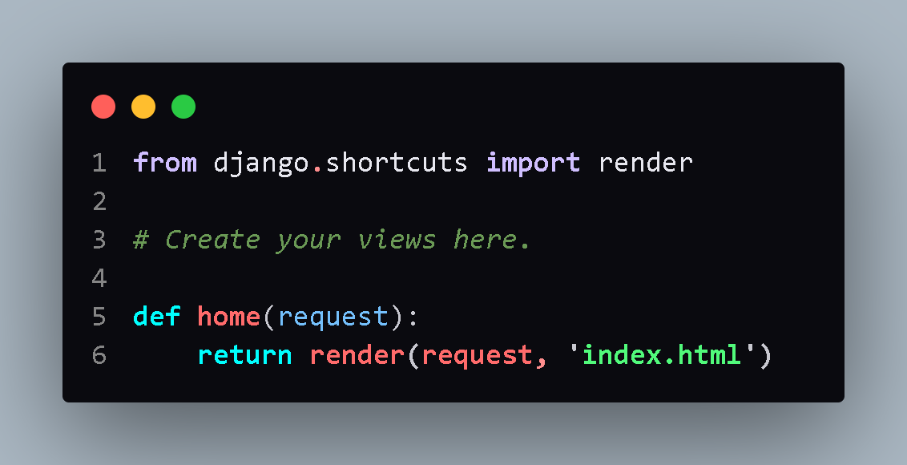
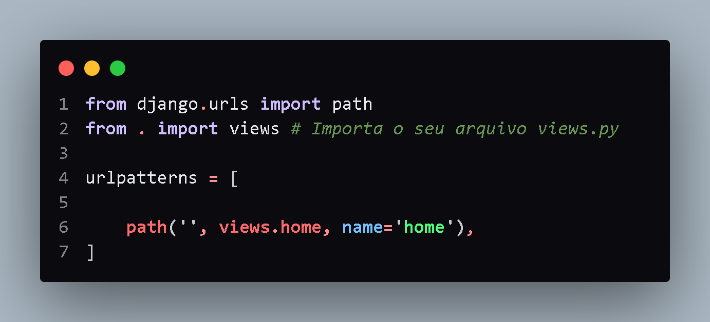
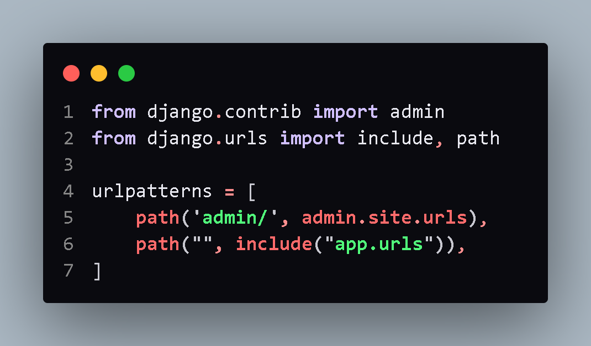
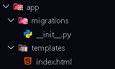
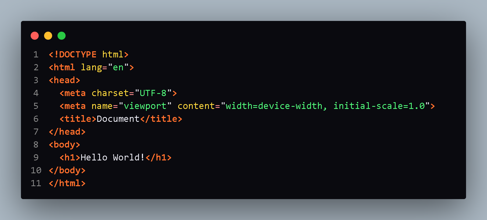
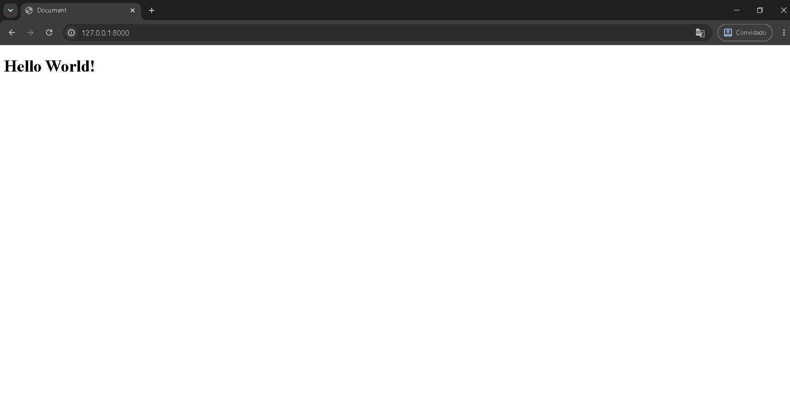

Linha do tempo de um projeto Django
Introdução
Bem-vindo à linha do tempo do seu desenvolvimento! Aqui daremos os primeiros passos práticos na estruturação do seu projeto Django. Nosso foco inicial será criar um ambiente de desenvolvimento limpo e isolado para garantir que todas as dependências funcionem em perfeita harmonia.
O que vamos construir
Nesta etapa, você aprenderá a:
-
Configurar o ambiente virtual:
Criar e ativar o seu virtualenv, isolando os pacotes Python do seu sistema operacional.
-
Iniciar o Projeto:
Utilizar a linha de comando do Django para estruturar a arquitetura base.
-
Criar a Primeira Aplicação:
Dar vida aos componentes que farão o seu sistema funcionar.
-
Requisitos:
Ter o Python instalado em sua máquina.
Sobre o projeto
Esta linha do tempo foi pensada para guiar desenvolvedores iniciantes e intermediários através das etapas essenciais de um projeto Django. Aqui você encontra dicas, boas práticas e uma visão clara do fluxo de desenvolvimento.
Foco em produtividade, organização e código limpo.
Acompanhe cada seção e evolua seu conhecimento.
Contato
Dúvidas, sugestões ou feedback? Entre em contato através do canal oficial do projeto ou pelas redes sociais.
Criando o ambiente virtual
Antes de começar a programar, precisamos isolar as dependências do seu projeto em um ambiente virtual. Isso evita conflitos com outros projetos Python instalados no seu computador.
Criar o ambiente virtual
Abra o terminal na pasta onde deseja criar seu projeto e execute:
# Criar o ambiente virtual (Windows) python -m venv venv # Criar o ambiente virtual (Linux/Mac) python3 -m venv venv
O comando python -m venv venv cria uma pasta chamada venv/ com uma cópia isolada do Python.
Ativar o ambiente virtual
Agora ative o ambiente para começar a usar o Python isolado:
# Ativar no Windows venv\Scripts\activate # Ativar no Linux/Mac source venv/bin/activate
Após ativar, você verá (venv) no início da linha do terminal, indicando que o ambiente está ativo.
Instalar o Django
Com o ambiente ativo, instale o Django usando o pip (gerenciador de pacotes do Python):
# Instalar a versão mais recente do Django pip install django # Instalar uma versão específica (ex: 5.0.4) pip install django==5.0.4
Para verificar se o Django foi instalado corretamente: python -m django --version
Criar o projeto Django
Com o Django instalado, crie seu primeiro projeto:
# Criar o projeto (substitua "meu_projeto" pelo nome desejado) django-admin startproject meu_projeto # Entrar na pasta do projeto cd meu_projeto
A estrutura gerada será a do Nível 1 que vimos anteriormente!
Rodar o servidor de desenvolvimento
Para testar se tudo funcionou, rode o servidor embutido do Django:
# Rodar o servidor
python manage.py runserver
Abra seu navegador em http://127.0.0.1:8000 e veja a página de boas-vindas do Django!
Criar sua primeira aplicação
Com o projeto criado, vamos criar um app para organizar o código:
# Criar o app (substitua "meu_app" pelo nome desejado)
python manage.py startapp meu_app
A estrutura gerada será a do Nível 2 que veremos em breve!
Registrar o App no settings.py
Agora precisamos informar ao Django que o app foi criado. Abra o arquivo meu_projeto/settings.py e adicione o app à lista INSTALLED_APPS:
# meu_projeto/settings.py INSTALLED_APPS = [ 'django.contrib.admin', 'django.contrib.auth', 'django.contrib.contenttypes', 'django.contrib.sessions', 'django.contrib.messages', 'django.contrib.staticfiles', 'meu_app', Adicione esta linha com o nome do seu app ]
Isso faz com que o Django reconheça seu app e inclua suas funcionalidades no projeto!
Comandos úteis do Django
-
python manage.py runserverRoda o servidor de desenvolvimento -
python manage.py startapp nome_appCria uma nova aplicação dentro do projeto -
python manage.py makemigrationsCria arquivos de migração para o banco de dados -
python manage.py migrateAplica as migrações no banco de dados -
python manage.py createsuperuserCria um usuário administrador para o painel admin -
pip freeze > requirements.txtSalva todas as dependências instaladas no requirements.txt -
deactivateDesativa o ambiente virtual
Resumo do fluxo de configuração
-
1
python -m venv venv— Criar ambiente virtual -
2
venv\Scripts\activateousource venv/bin/activate— Ativar ambiente -
3
pip install django— Instalar Django -
4
django-admin startproject meu_projeto— Criar projeto -
5
cd meu_projeto— Entrar na pasta do projeto -
6
python manage.py runserver— Rodar servidor (teste) -
7
python manage.py startapp meu_app— Criar aplicação -
8
settings.py— Adicionar'meu_app'aoINSTALLED_APPS - Ambiente pronto para desenvolver! Agora você tem o Django instalado, um projeto criado, um app registrado e pronto para começar a programar!
Estrutura inicial:
NÍVEL 1: A Estrutura Inicial
O que já vem pronto após executar django-admin startproject meu_projeto
meu_projeto/ │ ├── manage.py # Script de gerenciamento └── meu_projeto/ # Pacote principal do projeto ├── __init__.py # Indica que é um pacote Python ├── settings.py # Configurações do projeto ├── urls.py # Mapeamento de URLs ├── asgi.py # Servidor ASGI └── wsgi.py # Servidor WSGI (deploy)
Comando: django-admin startproject meu_projeto
Exemplo da estrutura gerada pelo comando django-admin startproject
Explicação:
-
manage.py:
O seu controle remoto do projeto no terminal. Você nunca edita este arquivo. Você apenas o executa para dar ordens ao Django, como rodar o servidor (python manage.py runserver) ou criar tabelas no banco.
-
meu_projeto/ (Subpasta interna):
É o pacote Python que contém as configurações do seu site.
-
settings.py- Configurações do projeto -
urls.py- Mapeamento de URLs -
wsgi.py- Servidor WSGI -
asgi.py- Servidor ASGI -
__init__.py- Inicializador do Python
Módulo central de configurações da aplicação. É responsável por armazenar variáveis de ambiente, credenciais de banco de dados, fuso horário, diretrizes de segurança e a relação de recursos ativos.
Mapeador de rotas (URLconf). Define os endereços suportados pela aplicação e direciona o fluxo de requisições web para os respectivos manipuladores (views) responsáveis por processá-las.
(Web Server Gateway Interface): Interface para servidores web tradicionais (ex.: Apache, Gunicorn). É utilizada para disponibilizar a aplicação em produção de maneira síncrona, processando uma requisição por vez em cada processo.
(Asynchronous Server Gateway Interface): O padrão moderno e assíncrono do Django. Permite que o servidor gerencie conexões simultâneas e de alta performance, viabilizando tecnologias em tempo real como WebSockets, notificações instantâneas e chats.
Arquivo de inicialização que indica ao interpretador Python que o diretório deve ser tratado como um pacote, permitindo que seus módulos sejam portados por outros scripts.
-
Seu primeiro Hello World!
NÍVEL 1: A Estrutura Inicial
O teste em sua máquina após executar python manage.py runserver
Estrutura para fazer um Hello World em Django Renderizando um HTML:
Views.py
Views.py consiste em um arquivo onde é localizado a lógica de negócios
em aplicações web construídas com o framework Django em Python.
Ele recebe requisições HTTP dos usuários, processa as informações e retorna
uma resposta.
Clique para saber mais
Pode retornar uma página HTML, redirecionamento ou erro.
# meu_app/views.py from django.shortcuts import render def hello_world(request): contexto = { 'nome': 'João', 'saudacao': 'Bem-vindo ao Django!' } return render(request, 'hello.html', contexto)

Exemplo do arquivo views.py
Urls.py do app
O arquivo urls.py de um aplicativo (app) no Django é o responsável
por definir as rotas (endereços da web) específicas daquela parte
do sistema. Ele atua como um mapa que liga a URL digitada no navegador
a uma função ou classe específica (as views), ajudando a manter
o código organizado e modular.
# meu_app/urls.py from django.urls import path from . import views urlpatterns = [ path('', views.hello_world, name='hello'), ]

Exemplo do arquivo urls.py do app
Urls.py do Projeto
O arquivo urls.py funciona como um roteador principal do seu projeto (geralmente em
frameworks como o Django). Ele mapeia os endereços web digitados no navegador (ex:
/home ou /admin) e os direciona para a função ou classe responsável por processar a
lógica e retornar a página solicitada.
# meu_projeto/urls.py from django.contrib import admin from django.urls import path, include urlpatterns = [ path('admin/', admin.site.urls), path('', include('meu_app.urls')), # Inclui as rotas do app ]

Exemplo do arquivo urls.py do projeto
Crie a pasta templates
A pasta templates é o diretório no Django que armazena os arquivos de interface (como
HTML) da sua aplicação. Ele separa o design visual do código de lógica (Python) e utiliza
o Django Template Language (DTL), para inserir dados dinâmicos do banco de dados nas páginas web.
meu_app/
└── templates/
└── hello.html

Estrutura da pasta templates/
Crie o HTML
O HTML dentro da pasta templates é renderizado pelo Django com dados dinâmicos.
<!-- templates/hello.html --> <!DOCTYPE html> <html> <head> <title>Hello World!</title> </head> <body> <h1>Olá, {{ nome }}!</h1> <p>{{ saudacao }}</p> </body> </html>

Exemplo do arquivo hello.html
Execute as migrações, inicie o servidor e abra no navegador
Com todos os arquivos criados, execute os comandos abaixo para ver seu Hello World funcionando:
# Executar migrações (se tiver modelos) python manage.py makemigrations python manage.py migrate # Rodar o servidor python manage.py runserver # Abrir no navegador # http://127.0.0.1:8000
Resultado Final:

Hello World funcionando!
Seu primeiro site Django está no ar
Estrutura intermediária:
O desenvolvimento do site está em andamento. A etapa atual exige a implementação de interfaces de usuário (templates), validação de dados via formulários e adequação às boas práticas de segurança. Embora o Django não forneça esses arquivos nativamente, é fundamental criá-los manualmente para garantir a integridade e a manutenibilidade do código.
NÍVEL 2: Criando sua Primeira Aplicação
O que acontece após executar python manage.py startapp meu_app
meu_projeto/ │ ├── manage.py │ ├── db.sqlite3 Surge após rodar o servidor │ └── meu_projeto/ │ └── meu_app/ Sua primeira aplicação Django ├── migrations/ # Histórico de alterações no banco │ └── __init__.py ├── __init__.py ├── admin.py # Configuração do painel administrativo ├── apps.py # Configuração do app ├── models.py # Definição dos modelos (tabelas) ├── tests.py # Testes automatizados └── views.py # Lógica de negócio (respostas HTTP)
Comando: python manage.py startapp meu_app
Exemplo da estrutura a ser criada pelo usuário
python manage.py startapp
Explicação:
-
db.sqlite3:
O arquivo db.sqlite3 é o banco de dados padrão que o Django cria automaticamente para armazenar todas as informações da sua aplicação. Ele é leve, não requer instalação de servidores complexos e salva todos os seus dados (usuários, posts, produtos) diretamente em um único arquivo dentro do seu projeto.
O que você precisa saber:
- Zero configuração: Ele já vem pronto para uso, o que o torna a melhor opção para aprendizado, testes e desenvolvimento de sites.
- Como ele funciona: O Django usa uma ferramenta chamada ORM (Object-Relational Mapper). Você escreve código em Python, e o Django traduz e salva essas informações no db.sqlite3 automaticamente.
- Para projetos grandes ou em produção: O SQLite não lida bem com milhares de pessoas acessando e escrevendo dados ao mesmo tempo. Nesses casos, migre para bancos mais robustos como PostgreSQL ou MySQL.
-
Exemplos de estrutura de arquivos e pastas — Nível Intermediário:
Conforme o projeto cresce, novos arquivos e pastas são adicionados para organizar melhor o código.
Variáveis de ambiente - chaves secretas, senhas de banco de dados, API keys. 🚫 Nunca commitarLista de arquivos/pastas que o Git deve ignorar:__pycache__/,.env,db.sqlite3,venv/.Lista todas as dependências do projeto. Usepip install -r requirements.txtpara instalar tudo.Pasta para arquivos HTML (telas). Usebase.htmlcomo layout principal e crie subpastas por app.Guarda arquivos estáticos: CSS, JavaScript, imagens. Estrutura:static/css/,static/js/,static/img/.Arquivo criado dentro do app para organizar as rotas específicas, mantendo o projeto mais limpo.Define formulários Django para entrada e validação de dados antes de salvar no banco.
Estrutura Avançada
O projeto atual alcançou grande escala, atendendo milhares de usuários. Para garantir
níveis elevados de segurança, desempenho e manutenção por uma equipe de
desenvolvedores, a tradicional estrutura monolítica de arquivos isolados (como views.py e
models.py) foi substituída por uma arquitetura modular baseada em diretórios.
-
media/ (Pasta):
Diferente da pasta static (que guarda seus códigos de design), a pasta media/ guarda tudo que os usuários enviam para o site: fotos de perfil, comprovantes em PDF, planilhas, etc.
-
meu_projeto/settings/ (Pasta que substitui o settings.py):
Projetos profissionais não misturam configurações de desenvolvimento com as de produção. Nós dividimos o cérebro em três partes:
base.py(comum a todos),local.py(para rodar na sua máquina) eproduction.py(com segurança reforçada e conexão com servidores reais de banco de dados). -
meu_app/serializers.py:
Se o seu Django não vai renderizar páginas HTML diretamente, mas sim enviar dados estruturados para um aplicativo de celular (Flutter/React Native) ou um site em React, este arquivo traduz seus objetos do banco de dados para o formato JSON.
-
meu_app/services.py:
Para evitar que o arquivo views.py fique lotado com milhares de linhas, toda lógica de negócios complexa (como regras de cálculo de impostos, comunicação com gateways de pagamento como Stripe/Pagar.me) é isolada aqui dentro.
-
meu_app/signals.py:
Cria "ouvintes" automáticos. Por exemplo: "Toda vez que uma linha for criada na tabela de Usuário, dispare um sinal que executa a função de enviar um e-mail de boas-vindas".
-
meu_app/middleware.py:
Arquivos que agem como "seguranças" nas portas de entrada e saída do seu site. Eles podem analisar cada requisição que chega e, se detectarem algo suspeito, bloqueiam o usuário antes mesmo de ele chegar nas suas views.
-
management/commands/ (Pastas):
Permitem que você crie novos comandos para o terminal. Se você criar o arquivo
limpar_dados.pyaí dentro, poderá abrir seu terminal e rodarpython manage.py limpar_dados. É fantástico para criar rotinas automáticas de manutenção no servidor. -
Dockerfile e docker-compose.yml:
Arquivos de infraestrutura. Eles servem para empacotar todo o seu projeto Django dentro de uma "caixa isolada" (container Docker) que pode rodar exatamente da mesma forma em qualquer computador ou servidor do mundo, sem problemas de "na minha máquina funciona".
-
meu_projeto/celery.py:
Permite rodar tarefas extremamente demoradas (como enviar 5.000 PDFs por e-mail ou processar uma planilha gigante) em segundo plano, sem travar a navegação do usuário no site.
NÍVEL 3: Organização Avançada
Arquivos de configuração e pastas estáticas
meu_projeto/ │ ├── manage.py │ ├── db.sqlite3 │ ├── .env 🔒 Variáveis de ambiente (senhas, chaves secretas) │ ├── .gitignore 🚫 Arquivos que o Git deve ignorar │ ├── requirements.txt 📦 Lista de dependências do projeto │ │ │ ├── templates/ 🎨 Pasta para telas HTML │ │ └── base.html # Layout base do site │ └── static/ 🖼️ Arquivos estáticos (CSS, JS, imagens) │ ├── css/ # Estilos │ └── js/ # Scripts │ ├── meu_projeto/ # Configurações do projeto └── meu_app/ # Sua aplicação ├── ... (arquivos anteriores) ├── urls.py 🔗 Rotas específicas do app └── forms.py 📝 Validação de formulários
Demonstração
Clique em qualquer arquivo abaixo para abrir o Inspetor Dinâmico na lateral direita. Lá você poderá analisar o código de exemplo e copiá-lo para usar como "cola" no seu projeto.